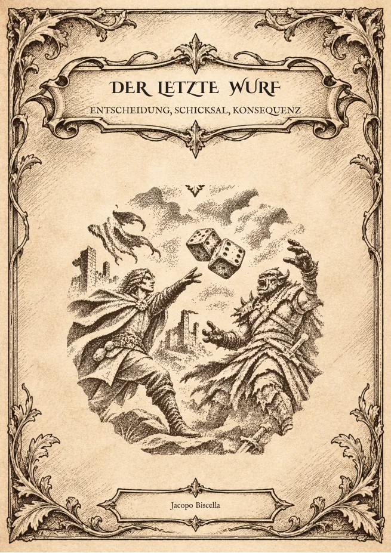

Eine Mechanik für alles
Kämpfen, Schleichen, Überzeugen und Zaubern folgen denselben Würfelregeln.
Ein Spiel von Jacopo Biscella
Ein zugängliches Fantasy-Rollenspiel mit gewöhnlichen sechsseitigen Würfeln, schnellen Entscheidungen und Geschichten, die auf eure Handlungen reagieren.

Gewöhnliche W6 · 2W6+
✧Kein starres Initiativesystem
✧Entscheidungen haben Folgen
Eine einheitliche Würfelmechanik, vier Attribute und eine Welt voller Möglichkeiten. Fertigkeiten und Umstände verändern, wie die Würfel ausgewertet werden.
Kampf ist ein Gespräch: kein starres Initiativesystem und kein Raster. Magie hat ihren Preis; ein misslungener kritischer Versuch erfordert einen neuen Ansatz.
Ein Rollenspiel für Menschen, die keine Zeit für Rollenspiele haben.
Du hast ein Leben und wenig Zeit, willst aber mit Freunden Geschichten erzählen. Ein Charakterbogen und gewöhnliche sechsseitige Würfel genügen.
Kämpfen, Schleichen, Überzeugen und Zaubern folgen denselben Würfelregeln.
Keine starren Runden oder Felder. Beschreibe dein Handeln und erlebe die Folgen.
Grimoires haben Kosten und mögliche Rückschläge für die ganze Gruppe.
Entdeckungen, Schwächen und Entscheidungen prägen den Fortschritt.
Verletzung und Ermüdung zehren vom selben Lebenspunktevorrat.
Es werden nur gewöhnliche sechsseitige Würfel (W6) gebraucht. Kein besonderes Würfelset ist nötig.
| Stufe | Wurf |
|---|---|
| Ungeübt | 2W6, niedrigeren behalten |
| Kompetent | 1W6 |
| Experte | 2W6, höheren behalten |
Mindestens zwei Sechsen ergeben einen kritischen Erfolg. Verausgabung fügt gegen eine Ermüdungswunde einen Würfel hinzu.
Die Grundregeln sind vollständig und spielbar. Das Spiel wird weiterentwickelt; Rückmeldungen sind willkommen.
Regeln lesen
{{ u.catalog.first }}
{{ u.intro_label }}
{{ u.catalog.intro_short }}